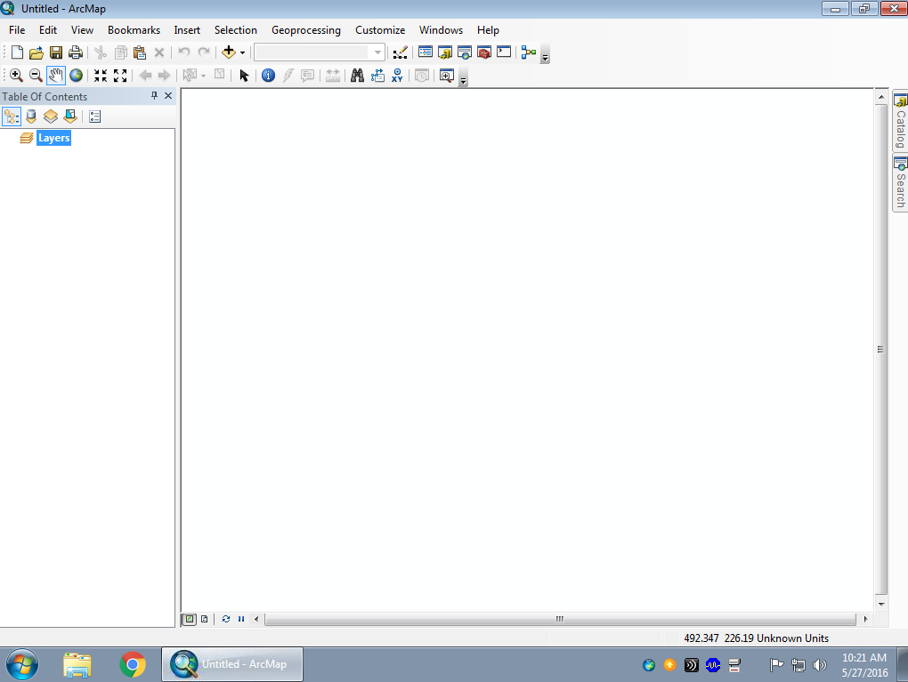

We will be doing all of our work today with GIS software. Geographic Information Systems (GIS) refers to software that is designed to work with maps, aerial images, and other types of geospatial data. Geospatial data is anything that has a location that can be mapped.
At CSUSM, we use the GIS that is made by ESRI (Environmental Systems Research Institute), called ArcGIS. ArcGIS is actually a collection of distinct programs that perform different aspects of mapping and spatial data analysis, and we will be working with just one part of it, called ArcMap.
The first thing we need to do is to get ArcMap up and running.
|
1. From the Start menu, start typing the word "arcmap", and you will see an icon for "ArcMap" appear. Select it to launch the ArcMap desktop environment. What happens next is a little odd, but bear with me... this first time you run ArcMap you won't get the program, you will get a second Windows desktop (the older Windows 7). We have found through hard experience that ArcMap runs better in its own desktop environment, so that's what you get this first time. |
|
|
2. Within ArcMap's desktop environment, select the Start menu, and once again type "arcmap", and hit the ENTER key. This time the actual ArcMap program will start. |
You should see a window that looks like this:
If you get an "ArcMap - Getting Started" window floating on top of this one, you can just click on the "Cancel" button to close it.
Victory! Now let's get some imagery added to the map.